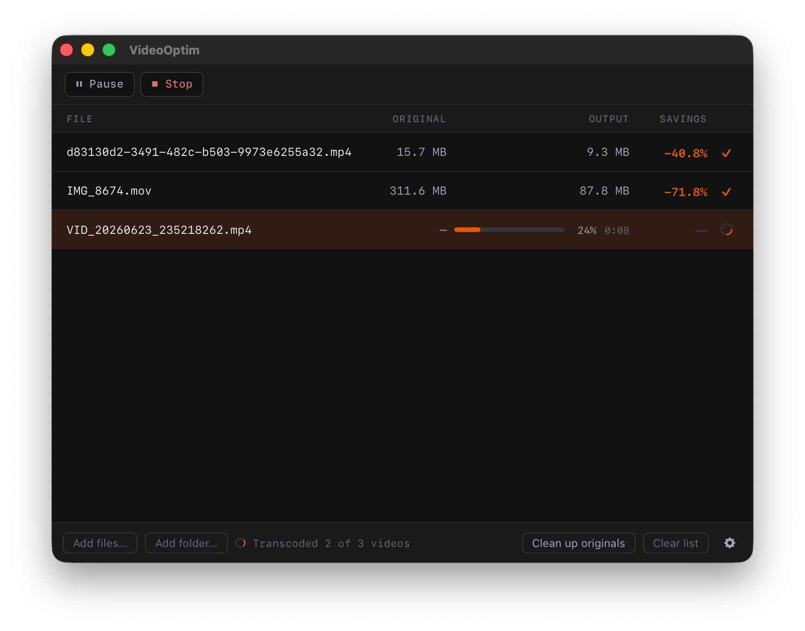

A macOS app that re-encodes videos to H.265 using ffmpeg. Drop files in, get smaller files out.

Drop video files or folders. Processes them one at a time. Supports MP4, MOV, MKV, AVI, WebM.
VideoToolbox for hardware-accelerated encoding on Apple Silicon, or libx265 for better compression at the cost of speed.
If the output ends up larger than the original, VideoOptim keeps the original and discards the encode. Configurable.
Per-file progress bar with elapsed time. See what's running and how much space was saved per file.
Audio is passed through with -c:a copy. No transcoding, no quality change.
After reviewing results, one button moves all originals to Trash. Nothing is deleted automatically.
Drag files or a folder onto the window. You can also use Add Files… or Add Folder… from the menu.
VideoOptim runs ffmpeg on each file sequentially, encoding to H.265. Output is saved next to the original with an _optimized.mp4 suffix.
Check the size diffs. If everything looks good, hit Clean up originals to send the source files to Trash.
macOS only. Apple Silicon. ffmpeg is bundled — nothing else to install.
Download VideoOptimmacOS 12 · apple silicon (M1+) · ~15 MB